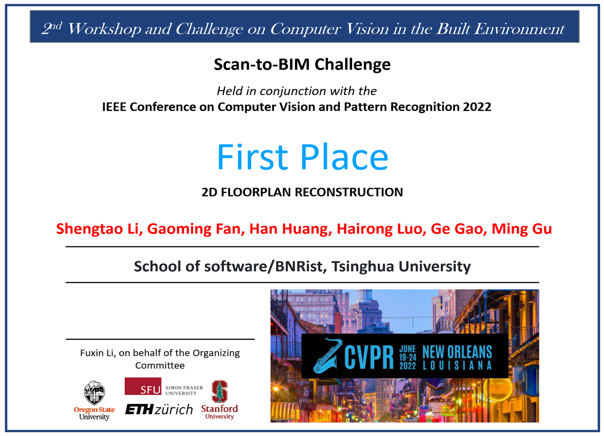
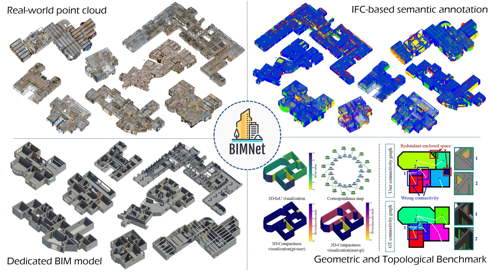
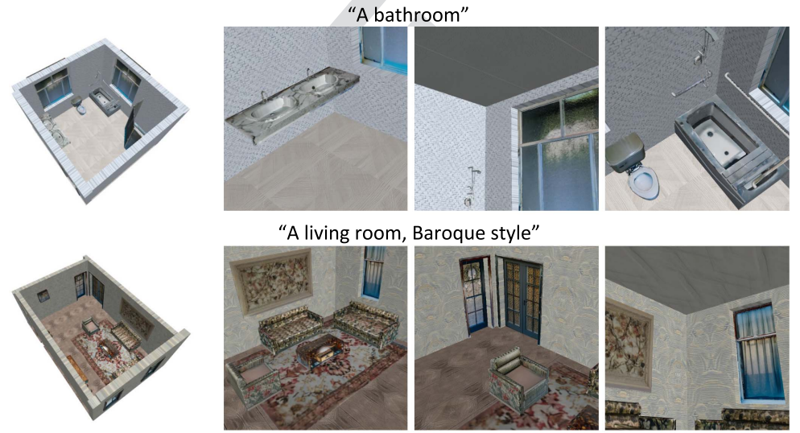

ÂÖ≥‰∫éÊà뉪¨🌍
我们是清华大学软件学院CBIMS研究组。我们的研究专注于建筑信息模型（BIM）、3D计算机视觉和人工智能（AI）。我们致力于连接建筑、工程和建设（AEC）行业与人工智能之间的桥梁。
Ëé∑•ñ🏆
First Place🥇 -- Scan-to-BIM Challenge (2D Floorplan Reconstruction)
Held in conjunction with CVPR 2023, Vancouver, Canada.
Cheng Peng, Ziyi Ke, Zijian Sun, Yudong Liu, Xinyi Du, Chao Deng, Ge Gao, Ming Gu
Second Place🥈 -- Scan-to-BIM Challenge (3D Building Model Reconstruction)
Held in conjunction with CVPR 2023, Vancouver, Canada.
Cheng Peng, Ziyi Ke, Zijian Sun, Yudong Liu, Xinyi Du, Chao Deng, Ge Gao, Ming Gu

First Place🥇 -- Scan-to-BIM Challenge (2D Floorplan Reconstruction)
Held in conjunction with CVPR 2022, New Orleans, USA.
Shengtao Li, Gaoming Fan, Han Huang, Hairong Luo, Ge Gao, Ming Gu

First Place🥇 -- Scan-to-BIM Challenge (3D Floorplan Reconstruction)
Held in conjunction with CVPR 2022, New Orleans, USA.
Han Huang, Gaoming Fan, Shengtao Li, Ge Gao, Ming Gu
ËÆ∫ÊñáÂèëË°®📄
2025
I-Filtering: Implicit Filtering for Learning Neural Distance Functions from 3D Point Clouds
Shengtao Li, Yudong Liu, Ge Gao*, Ming Gu, Yu-Shen Liu
IEEE Transactions on Pattern Analysis and Machine Intelligence (TPAMI), 2025

BIMNet: Dataset and benchmark for as-built BIM reconstruction from real-world point cloud
Yudong Liu, Han Huang, Ge Gao*, Ziyi Ke, Shengtao Li, Ming Gu
Automation in Construction (AUTCON), 2025

BIMFusion: Texturing Building Information Models Using Diffusion Generative Methods
Chao Deng, Han Huang, Ziyi Ke, Yulun Wu, Ge Gao*, Ming Gu
Journal of Computing in Civil Engineering (JCCE), 2025
FatesGS: Fast and Accurate Sparse-View Surface Reconstruction using Gaussian Splatting with Depth-Feature Consistency
Han Huang#, Yulun Wu#, Chao Deng, Ge Gao*, Ming Gu, Yu-Shen Liu
The 39th Annual AAAI Conference on Artificial Intelligence (AAAI), 2025

Sparis: Neural Implicit Surface Reconstruction of Indoor Scenes from Sparse Views
Yulun Wu#, Han Huang#, Wenyuan Zhang, Chao Deng, Ge Gao*, Ming Gu, Yu-Shen Liu
The 39th Annual AAAI Conference on Artificial Intelligence (AAAI), 2025
2024

Implicit Filtering for Learning Neural Signed Distance Functions from 3D Point Clouds
Shengtao Li, Ge Gao*, Yudong Liu, Ming Gu, Yu-Shen Liu
The 18th European Conference on Computer Vision (ECCV), 2024.
GridFormer: Point-Grid Transformer for Surface Reconstruction
Shengtao Li, Ge Gao*, Yudong Liu, Yu-Shen Liu, Ming Gu
The 38th Annual AAAI Conference on Artificial Intelligence (AAAI), 2024
NeuSurf: On-Surface Priors for Neural Surface Reconstruction from Sparse Input Views
Han Huang, Yulun Wu, Junsheng Zhou, Ge Gao*, Ming Gu, Yu-Shen Liu
The 38th Annual AAAI Conference on Artificial Intelligence (AAAI), 2024